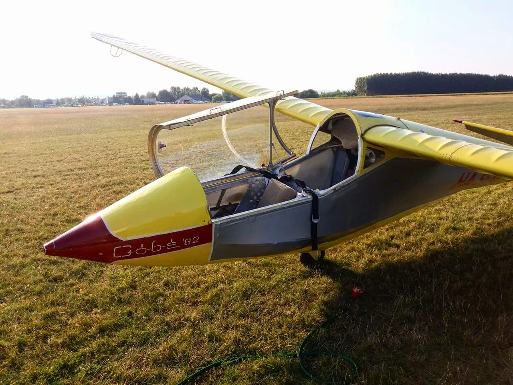
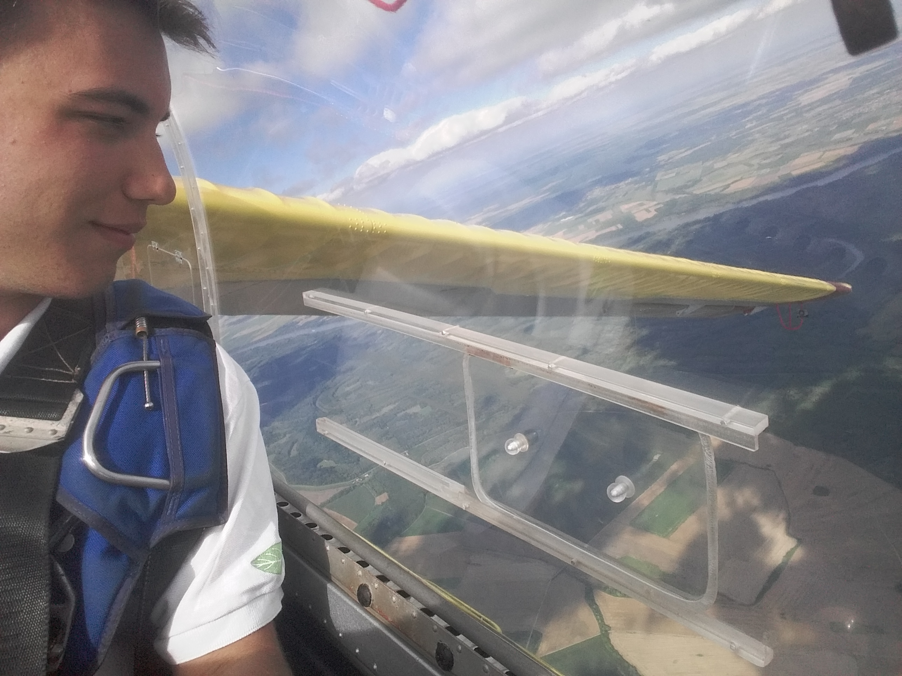
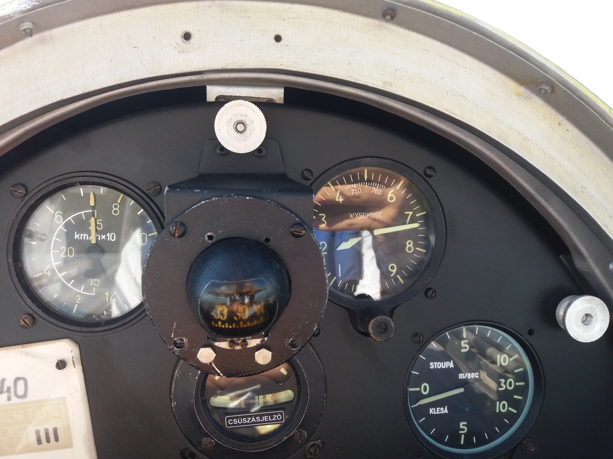
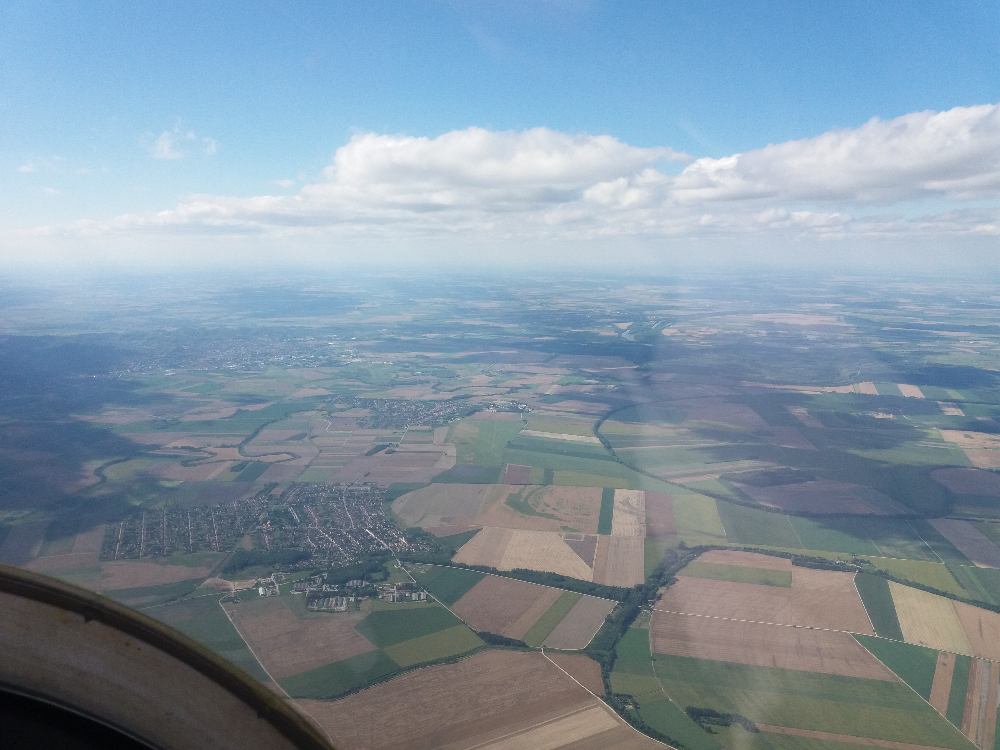
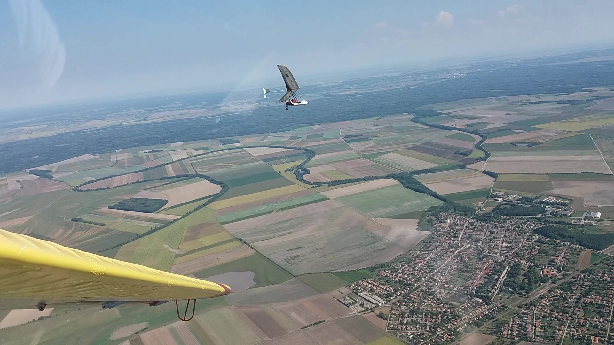

3 évig vitorlázórepültem aktívan az Őcsényi Vitorlázórepülő Sportegyesület tagjaként az Őcsényi Repülőtéren. Sajnos egészségügyi okok miatt két éve nem repülhetek.
A R-26SU típusú oktató vitorlázó-repülőgép. Ezt a repülőgépet Rubik Ernő tervezte, a rubik kocka tervezőjének édesapja, az 1960as években. 193 darabot gyártottak belőle, mára ebből aligha maradt 15-20 működőképes példány. A képen látható gép 1988-ban épült, azóta növendékek generációit indította el a pilótakarrier felé.
 Magasság:1730 m
A műszerfalról felnézve: A közelebbi falu Decs, és a távolabbi Őcsény, mellette jobbra, alatta a zöld mező a repülőtér.

Tovább repülve megérkezünk Szekszárd központja fölé. (Elnézést a plexi tükröződéséért)

Szekszárd déli része, a dombokon látszódnak a szőlősorok. Az Alföld itt ér véget, és itt kezdődik a dombság.

Egy sárkányrepülős lefotózott, háttérben Szekszárd.
A lencse másik végén.

A Góbé egy nagyon megbocsátó típus, a szándékosan generált dugóhúzó manőverből is egyszerűen vissza lehet hozni a normál repülési helyzetbe.
Köszönöm hogy végignézted! Ha tetszett, akkor ez is tetszeni fog: